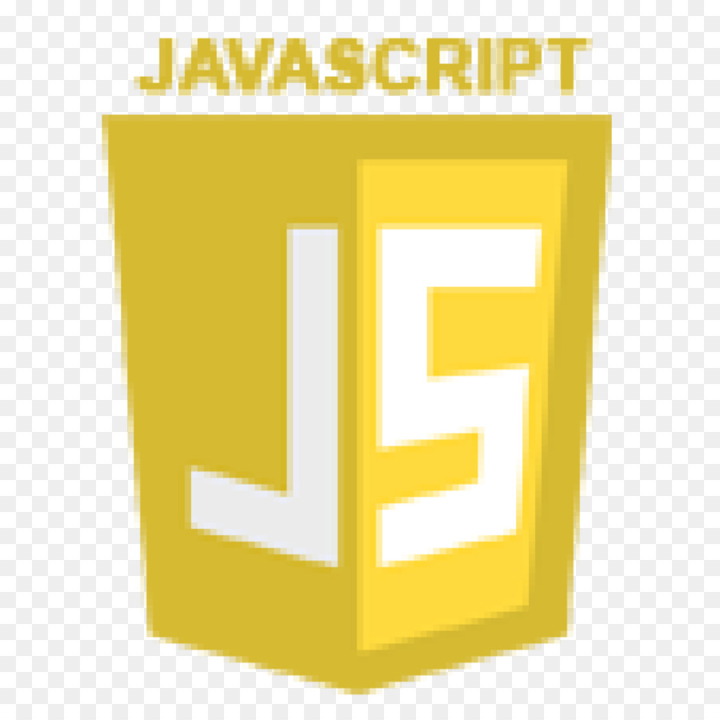

Explore More Articles
Project Experience
Discover insights, challenges, and solutions from recent projects.
- Project 1: Developed a dynamic website for a using HTML, CSS, and JavaScript, focusing on responsive design and optimized load times.
- Project 2: Built an e-commerce site with a secure user login system, product management, and checkout features using React and Firebase.
- Project 3: Created a resturant website, providing real-time insights for business decisions.
Industry Trends
Exploring the latest developments and emerging technologies in web design and development.
- Trend 1: The rise of AI tools in automating web development tasks, including content generation and layout suggestions.
- Trend 2: Progressive Web Apps (PWAs) as a growing alternative to traditional mobile apps, focusing on offline access and app-like experiences.
- Trend 3: Emphasis on accessibility and inclusive design, making websites more user-friendly for everyone.
Personal Growth
A continuous journey in improving skills, enhancing productivity, and achieving milestones in development.
- Skill Development: Improved proficiency in JavaScript frameworks, specifically React and Vue, enhancing the ability to create dynamic interfaces.
- Professional Growth: Participated in workshops and seminars on project management and Agile development to boost collaborative skills.
- Future Goals: Learning more about server-side programming to build full-stack applications and working towards cloud certification.
Skills

HTML&CSS

JavaScript

Web Designing

Programing in C, Python & Java, c++.